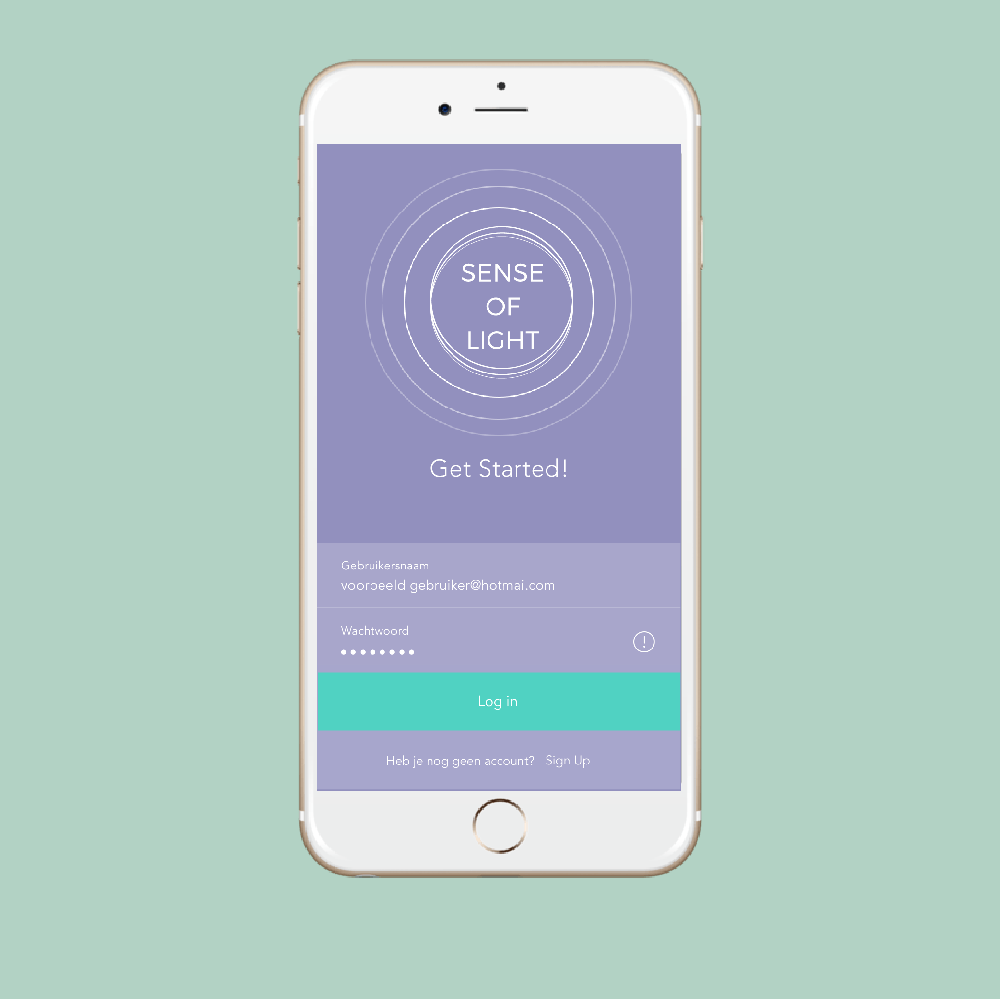
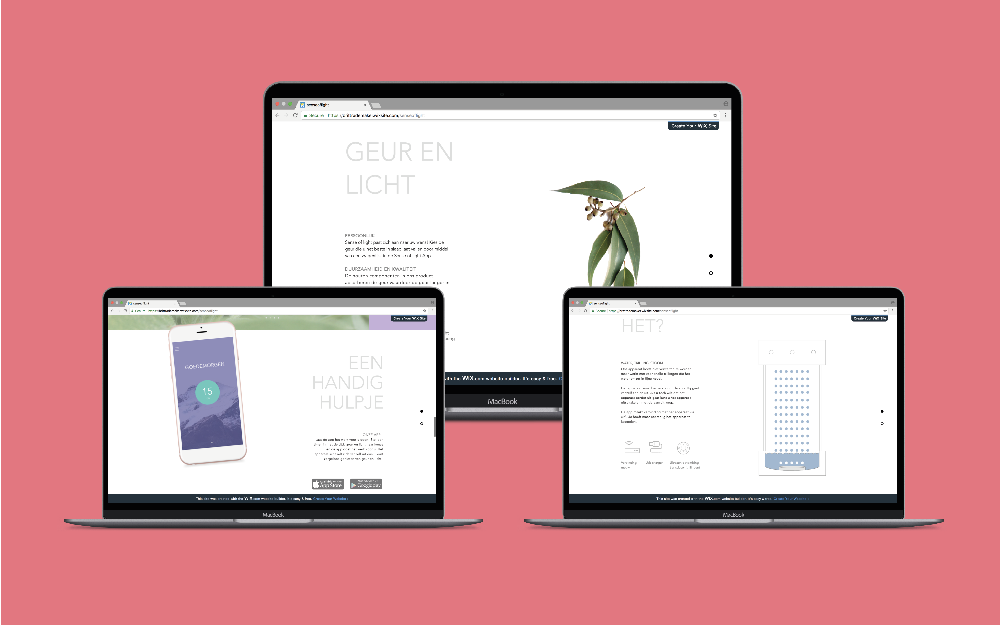
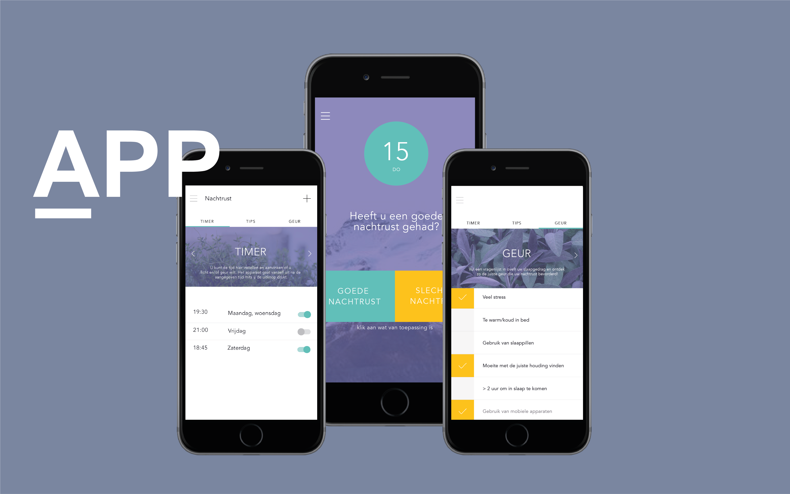
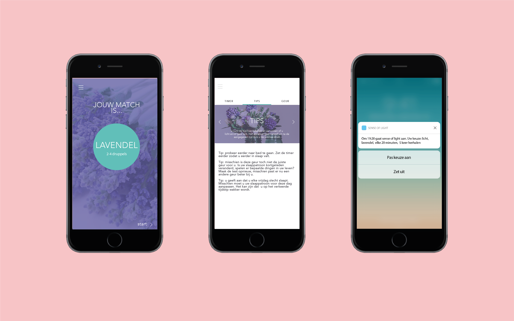
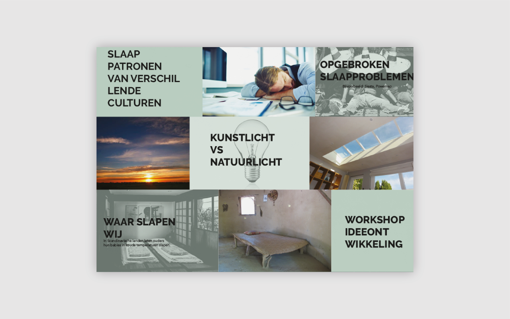

SENSE OF LIGHT
Illustrator, indesign
Project 3 april 2016
De opdracht
Sense of light is het derde project dat ik gedaan heb, het project gaat over mensen met slaapproblemen. De opdracht was om een interactief product te maken dat het in slaapvallen bevorderd. Het product met een aanvulling zijn op de, al bestaande, SleepCare app.
Het eindresultaat
Samen met een team van medestudenten zijn we tot één idee gekomen waarvan wij denken dat het mensen kan helpen om beter in slaap te komen. Door middel van geur en licht te combineren hebben wij de beste manier gevonden om het in slaap vallen te bevorderen. Het apparaat werkt met een Ultrasonic atomizing transducer die trillingen omzet in fijne nevel waardoor de geur langzaam verspreid wordt. Het rode dimlicht zorgt ervoor dat melatonine wordt aangemaakt en je een slaperig gevoel krijgt. De app zorgt ervoor dat de geuren door middel van een timer verspreidt worden. Het apparaat gaat daarna vanzelf weer uit. Op onze website is meer informatie te vinden over ons product!




